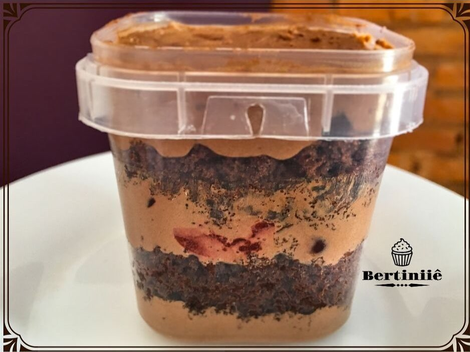

Massa de cacau, recheio de caramelo com amendoim e creme de chocolate nobre com nutella.Massa de cacau, recheio de leite ninho e creme de chocolate nobre com nutella.Café trufado.

Trufado de cereja.Leite Ninho.Sonho de Valsa.Negresco.Morango com recheio a base de leite moça e cobertura de ganache.Bombom de uva no pote.Abacaxi com coco.